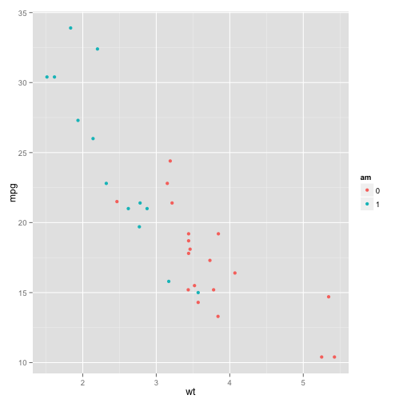

The "Exploratory Data Util for MTCars" lets you do an primitive initial exploratory data analysis of the relationship of 3 chosen variables from the MTCars data set.
Copenhagen Coursera
The "Exploratory Data Util for MTCars" lets you do an primitive initial exploratory data analysis of the relationship of 3 chosen variables from the MTCars data set.
Data are presented in a colored scatter plot as shown in the example below.

Factor variables will be shown with distinct colors, continous variables will colored with a color gradient.
The left side of the screen allows you to choose which feature variables to use for the X-axis, Y-axis and for the colouring of the data points. The scatter plot will update automatically when you change your variable choices in the left pane.
The right side of the screen is the scatter plot itself.
When initialized the plot will have chosen WT (Weight) for X-axis, MPG (Miles per Gallon) for Y-axis and AM (Transmission).
A short description of the MTCars data set from the official documentation of the MTCars data set is given below. In short is a data frame with 32 observations and 11 variables.